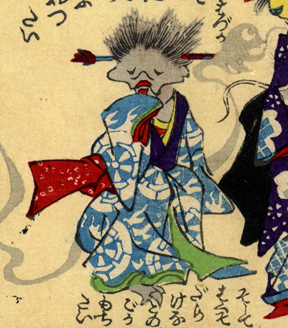

青地に火の車の柄が入った振袖を着た娘の化物。袖で口元を隠しながら立っている。毛髪は短く逆立っていて、頭には簪のようなものが突き刺さっている。後ろには、人魂のような影が漂っている。
出典：親書誌：U426_nichibunken_0226：化物の嫁入；バケモノノヨメイリ／日付：2010／資源識別子：U426_nichibunken_0226_0013_0000
Copyright (c)2010- International Research Center for Japanese Studies, Kyoto, Japan. All rights reserved.